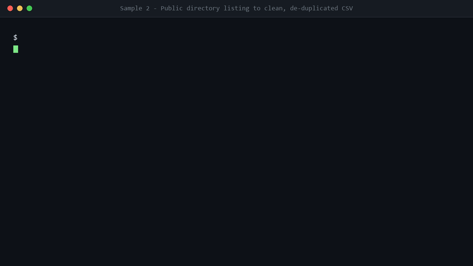
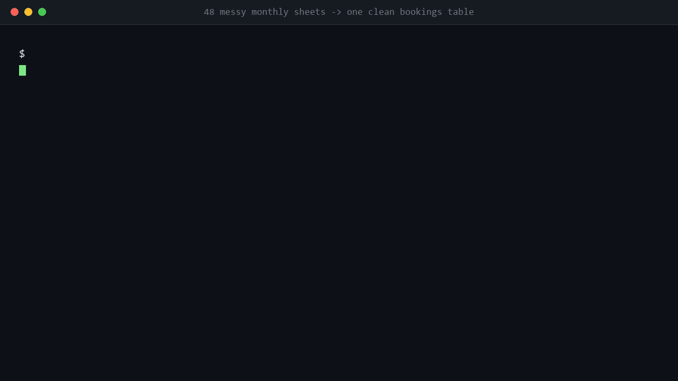

| 服务 | 交付 | 周期 | 价格 |
|---|---|---|---|
| 表格清洗 / 多表合并 | 干净主表 + 运行摘要 + review 清单 | 24–48 小时 | ¥39 起 / $15 起 |
| 网页抓取 + 结构化 | 规范化 CSV + 字段映射 + 可重跑脚本 | 2–3 天 | ¥59 起 / $25 起 |
| 文档抽取 → 结构化数据 | JSON + 报告 + 校验脚本 | 2–3 天 | ¥49 起 / $20 起 |
| 历史表格修复（多表头/异常） | 清洗表 + 复核表 + 17 项自检 | 2–4 天 | ¥99 起 / $30 起 |
把需求（或一份脱敏的样本文件）发我，我先回你一版可行性判断和准确报价，再决定要不要开工。
→ 脏表格一键清洗工具 v1.0（免费自助版）
自己跑一遍：我只做你搞不定的 20%。免费下载，已发布在 GitHub Releases。
Send me the requirement (or a redacted sample file). I reply with a feasibility note and an exact quote first. Payment: WeChat / Alipay (CNY) or Upwork / PayPal (USD).